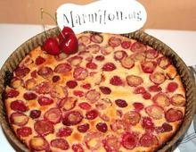

Clafoutis
Ingredients
×
- 80 g de beurre
- 3 oeufs
- 100 g de farine
- 80 g de sucre
- 1 pincée de sel
- 25 cl de lait
- 1 sachet de sucre vanillé
- 600 g de cerises

Préparation
Étape 1
Préchauffer le four à 180ºC.
Étape 2
Fondre la moitié de 80 g de beurre. Mélanger 3 oeufs, 100 g de farine, 80 g de sucre et 1 pincée de sel. Incorporer 25 cl de lait petit à petit, puis le beurre fondu.
Étape 3
Beurrer grassement le plat avec le reste du beurre, saupoudrer de 1 sachet de sucre vanillé et y ranger 600 g de cerises. Verser la pâte.
Étape 4
Cuire 45min à 180ºC.
Conseils
Version pommes : remplacer les cerises par 5 pommes en morceaux revenues dans du beurre avec un peu d’extrait de vanille, et ajouter 40g de poudre d’amande à la pâte.